คู่มือฉบับนี้อธิบาย ทุกปุ่มบนหน้าจอว่ากดแล้วเกิดอะไรขึ้น พร้อมภาพหน้าจอจริงของระบบ เรียงตามลำดับการทำงานจริงตั้งแต่เข้าสู่ระบบ นำเข้าข้อมูล จับคู่รายการ จนถึงออกรายงาน
ก่อนกดปุ่มใดๆ ควรเข้าใจก่อนว่าระบบเอาข้อมูลมาจากไหน และ “จับคู่สำเร็จ” หมายความว่าอย่างไร
Auto Reconcile Bank ใช้เปรียบเทียบรายการเดินบัญชีจาก ใบแจ้งยอดธนาคาร (Bank Statement) กับรายการทางบัญชีจาก Business Central 365 (BC365 / GL) แล้วจับคู่รายการที่เป็นรายการเดียวกันเข้าด้วยกัน รายการที่จับคู่แล้วจะถูกบันทึกเป็น Match พร้อมชื่อผู้ทำและเวลา เพื่อให้ตรวจสอบย้อนหลังได้
| ฝั่ง | มาจากไหน | แก้ไขได้ไหม |
|---|---|---|
| Bank Statement | อัปโหลดไฟล์ Excel/CSV จากธนาคาร ที่หน้า Import | แก้ไข/ลบได้ที่หน้า Master Data เท่านั้น และเฉพาะรายการที่ยังไม่ถูกจับคู่ |
| General Ledger (BC365) | ดึงอัตโนมัติจาก Business Central ผ่านปุ่ม “ซิงค์จาก BC365” | แก้ไขในระบบนี้ไม่ได้ — ต้องไปแก้ที่ BC365 แล้วกดซิงค์ใหม่ |
| สถานะ | ความหมาย | ทำอะไรต่อได้ |
|---|---|---|
| UNMATCHED | ยังไม่ถูกจับคู่ ยังค้างอยู่ | ไปจับคู่ที่หน้า Reconcile |
| MATCHED | จับคู่เรียบร้อยแล้ว | ดูได้ที่ Match History / กด Unmatch เพื่อคืนสถานะ |
| SUSPENSE | พักไว้ก่อน (บัญชีพักโอน) ยังหาคู่ไม่ได้ | ดูได้ที่หน้า Suspense / ดึงกลับไป Reconcile |
ใช้ชื่อผู้ใช้และรหัสผ่านชุดเดียวกับระบบ TRW Data Center — ระบบไม่ได้เก็บรหัสผ่านไว้เอง
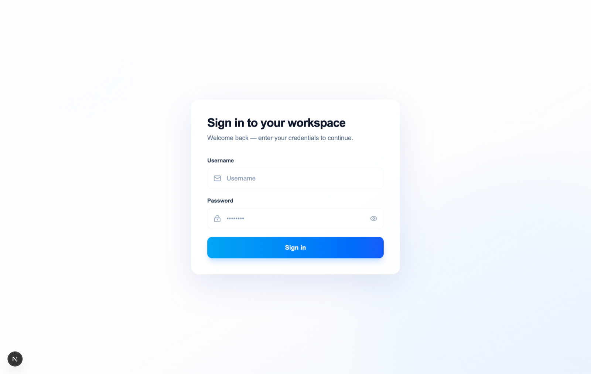
| สิ่งที่กด / กรอก | กดแล้วเกิดอะไรขึ้น |
|---|---|
| ช่อง Username | กรอกชื่อผู้ใช้ของพนักงาน (ชุดเดียวกับที่ใช้เข้าระบบกลางของบริษัท) |
| ช่อง Password | กรอกรหัสผ่าน ระบบจะซ่อนเป็นจุดไว้ |
| ไอคอนรูปตา 👁 ท้ายช่องรหัสผ่าน | สลับเปิด/ปิดการแสดงรหัสผ่านเป็นตัวอักษร ใช้ตรวจว่าพิมพ์ถูกไหม |
| ปุ่ม Sign in | ส่งข้อมูลไปตรวจสอบกับระบบกลาง ถ้าถูกต้องจะเข้าสู่หน้า Dashboard ทันที ระหว่างรอปุ่มจะเปลี่ยนเป็น “Signing in...” และกดซ้ำไม่ได้ |
| ข้อความ | สาเหตุและวิธีแก้ |
|---|---|
| username หรือรหัสผ่านไม่ถูกต้อง | พิมพ์ผิด หรือบัญชีถูกปิดใช้งาน — ตรวจตัวพิมพ์ใหญ่/เล็กและลองใหม่ |
| ไม่สามารถเชื่อมต่อกับเซิร์ฟเวอร์ได้ | เครื่องไม่ได้ต่อเครือข่ายภายใน หรือระบบกลางปิดอยู่ — ติดต่อฝ่าย IT |
| ตรวจสอบผู้ใช้งานไม่สำเร็จ (HTTP …) | ระบบตรวจสอบผู้ใช้งานตอบกลับผิดปกติ — แจ้งฝ่าย IT พร้อมเลข HTTP ที่เห็น |
แถบเมนูนี้อยู่ทุกหน้า ใช้สลับไปมาระหว่างงานแต่ละส่วน — เมนูที่กำลังเปิดอยู่จะเป็นพื้นหลังฟ้า
| เมนู | กดแล้วไปที่ไหน / ใช้ทำอะไร |
|---|---|
| Dashboard | หน้าสรุปภาพรวมประจำเดือน — ดูว่าเดือนนี้กระทบยอดไปกี่ % เหลือค้างเท่าไร |
| Import | นำเข้าไฟล์ Bank Statement และซิงค์รายการ GL ทั้งหมดจาก BC365 |
| Reconcile | หน้าจับคู่รายการ — งานหลักที่ใช้ทุกวัน |
| Match History | ประวัติการจับคู่ทั้งหมด ใช้ตรวจย้อนหลังและยกเลิกการจับคู่ (Unmatch) |
| Master Data | จัดการไฟล์ Statement ที่นำเข้าไว้ — ดูรายบรรทัด แก้ไข ลบ เพิ่มรายการด้วยมือ |
| Suspense | รายการที่พักไว้ (บัญชีพักโอน) และปุ่มดึงกลับไปจับคู่ใหม่ |
| Reports | รายงานการกระทบยอดแบบเทียบ 2 ฝั่ง พร้อมปุ่ม Export Excel |
| ปุ่ม | กดแล้วเกิดอะไรขึ้น |
|---|---|
| ปุ่มกลมเล็กขอบขวาของแถบเมนู | พับ/ขยายเมนู — พับแล้วเมนูจะเหลือแต่ไอคอน ได้พื้นที่ตารางกว้างขึ้น เหมาะกับหน้า Reconcile (จำค่าที่เลือกไว้ให้ ไม่ต้องกดใหม่ทุกครั้ง) |
| ไอคอน ☰ (บนจอมือถือ/จอแคบ) | เปิด–ปิดแถบเมนูแบบลิ้นชัก กดพื้นที่มืดด้านข้างเพื่อปิด |
| ชื่อผู้ใช้ + ตำแหน่ง (มุมล่างซ้าย) | แสดงว่าใครกำลังใช้งานอยู่ — ชื่อนี้จะถูกบันทึกเป็นผู้ทำรายการทุกครั้งที่กด Match / พักรายการ / Unmatch |
| ไอคอน Log out ข้างชื่อผู้ใช้ | ออกจากระบบทันที และล้างงานกระทบยอดที่ค้างอยู่ |
ใช้ตอบคำถามว่า “เดือนนี้กระทบยอดไปถึงไหนแล้ว และเหลืออะไรค้างบ้าง” ก่อนลงมือทำงานจริง
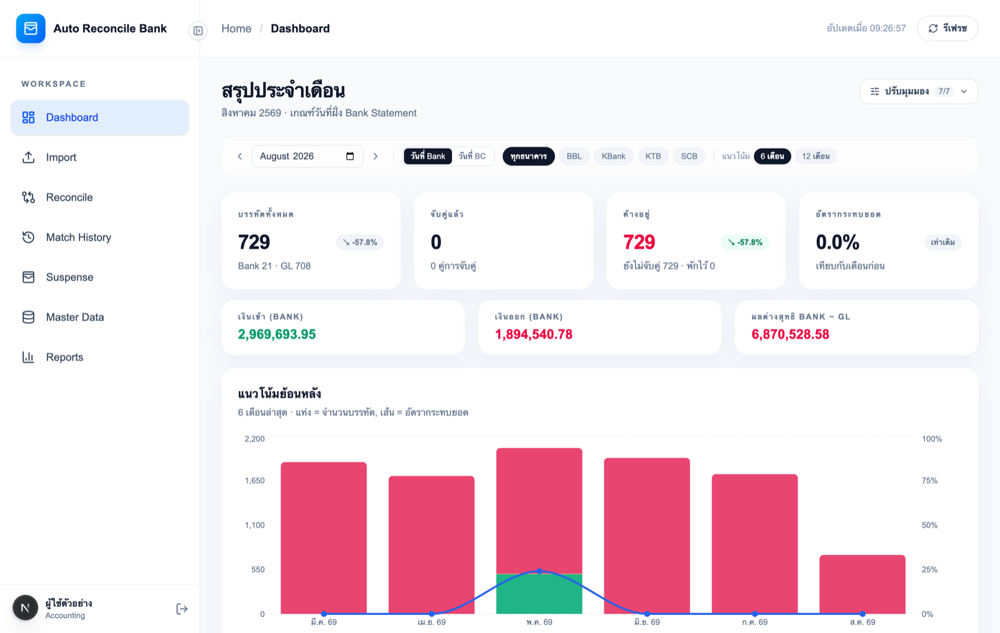
| ปุ่ม / สิ่งที่กด | กดแล้วเกิดอะไรขึ้น |
|---|---|
| อัปเดตเมื่อ HH:MM | ไม่ใช่ปุ่ม — บอกเวลาที่ดึงข้อมูลชุดที่เห็นอยู่ |
| ปุ่ม รีเฟรช | ดึงข้อมูลสรุปใหม่ทั้งหมดจากฐานข้อมูล ใช้หลังเพิ่งจับคู่รายการเสร็จ |
| ปุ่ม ปรับมุมมอง | เปิดเมนูเลือกว่าจะให้หน้านี้แสดงส่วนไหนบ้าง (ดูข้อ 4.4) |
| ปุ่ม / สิ่งที่กด | กดแล้วเกิดอะไรขึ้น |
|---|---|
| ลูกศร ‹ / › | ย้อนกลับ / เดินหน้าไปทีละ 1 เดือน แล้วโหลดตัวเลขของเดือนนั้นใหม่ |
| ช่องเลือกเดือน | กระโดดไปเดือนที่ต้องการโดยตรง |
| ปุ่ม เดือนนี้ | โผล่มาเฉพาะตอนที่ดูเดือนอื่นอยู่ — กดแล้วกลับมาเดือนปัจจุบัน |
| วันที่ Bank / วันที่ BC | เลือกว่าจะใช้ “วันที่ตามใบแจ้งยอดธนาคาร” หรือ “วันที่ที่บันทึกใน BC365” เป็นเกณฑ์คัดรายการเข้าเดือน ผลรวมทั้งหน้าจะเปลี่ยนตาม |
| ปุ่มชื่อธนาคาร (ทุกธนาคาร / BBL / KBank / SCB) | กรองให้เหลือเฉพาะธนาคารที่เลือก |
| ปุ่ม 6 เดือน / 12 เดือน | เลือกความยาวของกราฟแนวโน้มย้อนหลัง (แสดงเฉพาะเมื่อเปิดส่วน “แนวโน้มย้อนหลัง” ไว้) |
| การ์ด | อ่านอย่างไร |
|---|---|
| บรรทัดทั้งหมด | จำนวนบรรทัดทั้ง 2 ฝั่งรวมกันในเดือนนี้ พร้อมแยกว่ามาจาก Bank กี่บรรทัด GL กี่บรรทัด |
| จับคู่แล้ว | จำนวนบรรทัดที่จับคู่สำเร็จ และคิดเป็นกี่คู่การจับคู่ |
| ค้างอยู่ | ยังไม่จับคู่ + พักไว้ รวมกัน — ตัวเลขนี้คือ “งานที่ยังเหลือ” |
| อัตรากระทบยอด | % ของบรรทัดที่จับคู่แล้วเทียบกับทั้งหมด |
| ลูกศรเขียว/แดงมุมขวาการ์ด | เปรียบเทียบกับเดือนก่อนหน้า สีเขียว = ดีขึ้น สีแดง = แย่ลง |
| เงินเข้า / เงินออก / ผลต่างสุทธิ Bank − GL | ยอดเงินรวมของเดือน — ถ้า “ผลต่างสุทธิ” ไม่เป็น 0 แสดงว่ายังมีรายการที่ 2 ฝั่งไม่ตรงกัน |
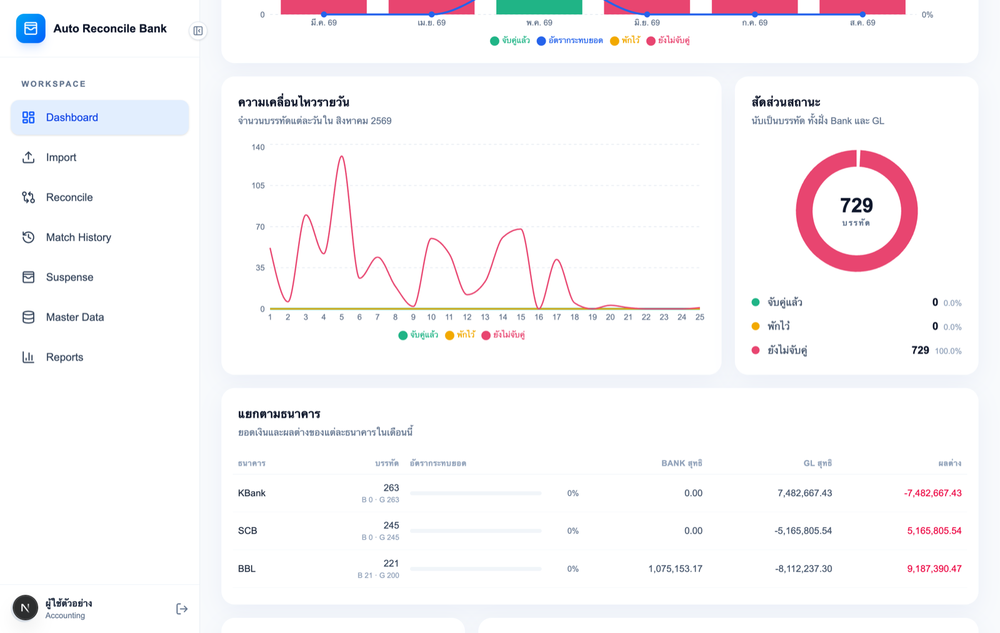
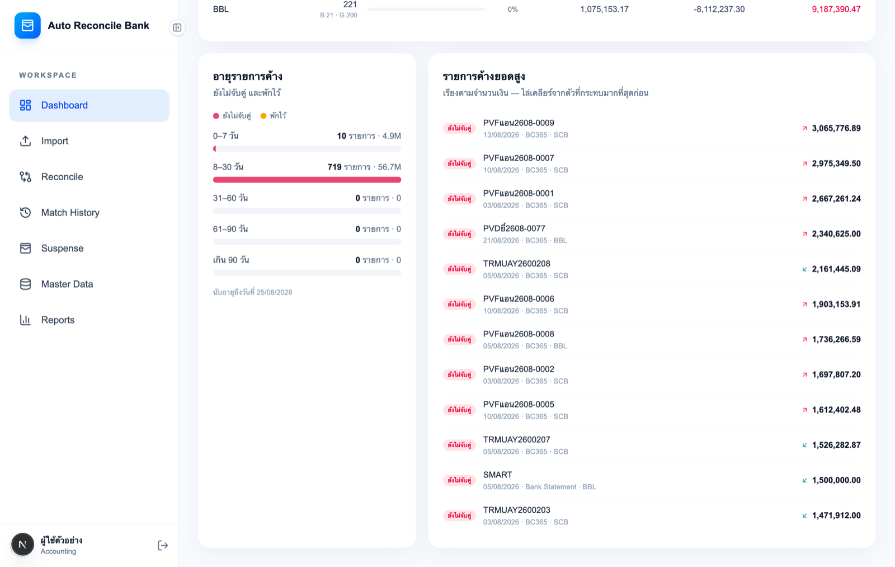
| ส่วนที่แสดง | บอกอะไร |
|---|---|
| แนวโน้มย้อนหลัง | แท่ง = จำนวนบรรทัดแต่ละเดือน, เส้นน้ำเงิน = อัตรากระทบยอด ใช้ดูว่าเดือนไหนตกหล่น |
| ความเคลื่อนไหวรายวัน | จำนวนบรรทัดแต่ละวันในเดือน แยกสีตามสถานะ — เห็นวันที่รายการเยอะผิดปกติ |
| สัดส่วนสถานะ | วงกลมแยก จับคู่แล้ว / พักไว้ / ยังไม่จับคู่ พร้อม % ด้านข้าง |
| แยกตามธนาคาร | เทียบยอดสุทธิ Bank กับ GL รายธนาคาร ช่อง “ผลต่าง” เป็นสีแดงเมื่อไม่ตรงกัน |
| อายุรายการค้าง | รายการค้างแบ่งตามช่วงอายุ 0–7 / 8–30 / 31–60 / 61–90 / เกิน 90 วัน — ยิ่งค้างนานยิ่งควรรีบเคลียร์ |
| รายการค้างยอดสูง | 12 รายการค้างที่มีจำนวนเงินสูงสุด เรียงจากมากไปน้อย |
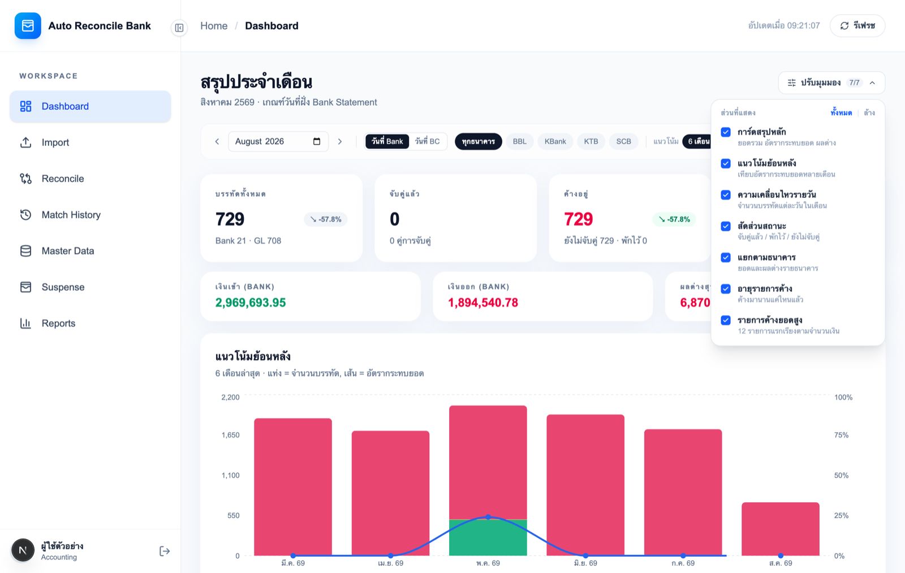
| สิ่งที่กด | กดแล้วเกิดอะไรขึ้น |
|---|---|
| ติ๊กถูกหน้าแต่ละหัวข้อ | เปิด/ปิดการแสดงส่วนนั้นบนหน้า Dashboard (ลำดับบนหน้าจอคงเดิมเสมอ) |
| ทั้งหมด | เปิดแสดงทุกส่วน |
| ล้าง | ปิดทุกส่วน หน้าจะว่างและขึ้นข้อความให้กลับมาเลือกใหม่ |
| ตัวเลข 7/7 บนปุ่ม | บอกว่ากำลังเปิดอยู่กี่ส่วนจากทั้งหมดกี่ส่วน |
| กดนอกกรอบเมนู หรือปุ่ม Esc | ปิดเมนู |
ทุกเดือนต้องทำ 2 อย่าง คือ อัปโหลดไฟล์ Statement ของธนาคาร และซิงค์รายการ GL จาก BC365
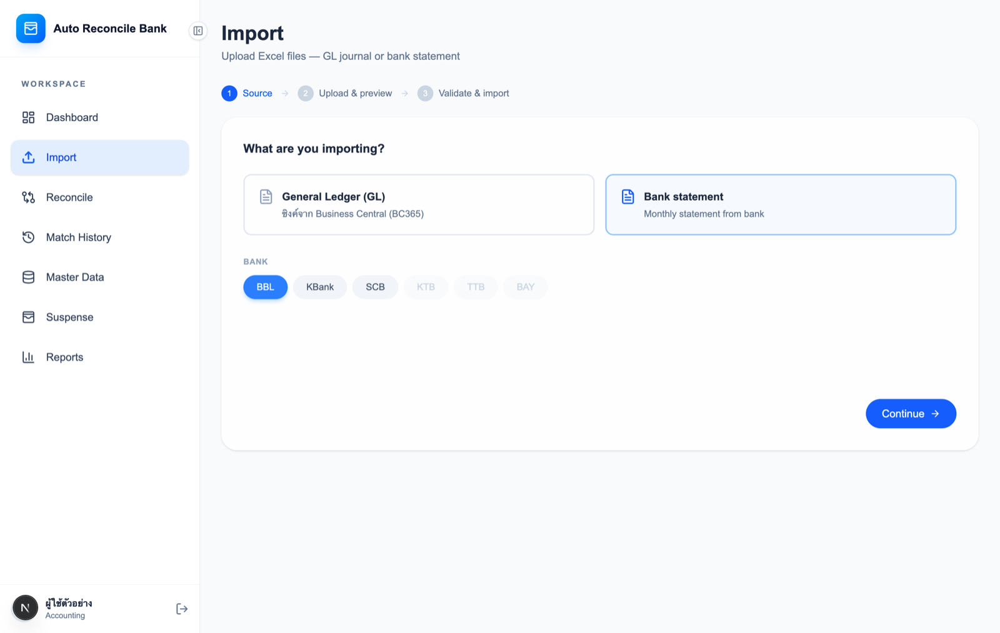
| สิ่งที่กด | กดแล้วเกิดอะไรขึ้น |
|---|---|
| การ์ด General Ledger (GL) | สลับไปโหมดซิงค์จาก BC365 แถบขั้นตอนด้านบนจะเหลือ 2 ขั้น และไม่ต้องอัปโหลดไฟล์ |
| การ์ด Bank statement | สลับไปโหมดอัปโหลดไฟล์ธนาคาร แถบขั้นตอนจะมี 3 ขั้น |
| ปุ่มชื่อธนาคาร BBL / KBank / SCB | เลือกว่าไฟล์ที่จะอัปโหลดเป็นของธนาคารไหน — สำคัญมาก เพราะระบบอ่านโครงสร้างคอลัมน์ตามธนาคารที่เลือก |
| ปุ่ม KTB / TTB / BAY (สีจาง) | กดไม่ได้ ยังไม่รองรับ |
| ปุ่ม Continue | ไปขั้นที่ 2 (อัปโหลดไฟล์) |
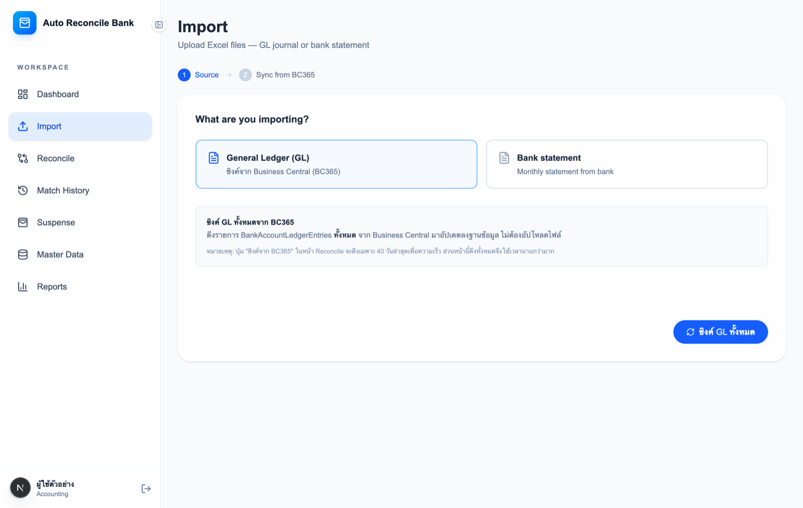
| สิ่งที่กด | กดแล้วเกิดอะไรขึ้น |
|---|---|
| ปุ่ม ซิงค์ GL ทั้งหมด | ดึงรายการ BankAccountLedgerEntries ทั้งหมด จาก Business Central มาอัปเดตลงฐานข้อมูล ระหว่างทำปุ่มจะเปลี่ยนเป็น “กำลังซิงค์ทั้งหมด...” และกดซ้ำไม่ได้ เสร็จแล้วขึ้นแถบเขียวยืนยัน |
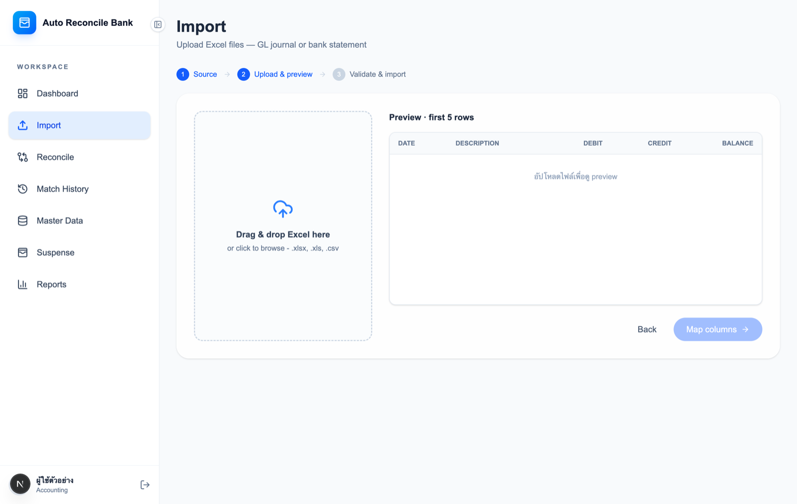
| สิ่งที่กด | กดแล้วเกิดอะไรขึ้น |
|---|---|
| กรอบเส้นประ (คลิก หรือ ลากไฟล์มาวาง) | เลือกไฟล์ .xlsx .xls หรือ .csv ระบบจะอ่านไฟล์ทันที
(ขึ้นวงกลมหมุน + ข้อความ “กำลังอ่านไฟล์...”) ยังไม่บันทึกลงฐานข้อมูลในขั้นนี้ |
| กล่องสรุปไฟล์ (ใต้กรอบอัปโหลด) | แสดงชื่อไฟล์ ขนาด และจำนวนแถวที่อ่านได้ พร้อมเครื่องหมายถูกสีเขียว |
| ตาราง Preview · first 5 rows | แสดง 5 แถวแรกของไฟล์ ใช้ตรวจว่าอ่านคอลัมน์ถูกต้องไหม มุมขวาบนบอกช่วงวันที่ของทั้งไฟล์ |
| ปุ่ม Back | กลับไปขั้นที่ 1 |
| ปุ่ม Map columns | ไปขั้นที่ 3 — กดได้ก็ต่อเมื่ออ่านไฟล์สำเร็จแล้ว |
| สิ่งที่เห็น / กด | ความหมาย |
|---|---|
| ตาราง Column mapping | แสดงว่าคอลัมน์ในไฟล์ถูกจับคู่กับช่องข้อมูลใด — ของแต่ละธนาคารกำหนดไว้ตายตัว แก้ไม่ได้ |
| กล่อง Validation ✓ เขียว | อ่านได้กี่แถว และช่วงวันที่ของไฟล์ |
| ⚠ possible duplicate rows | เตือนว่าอาจมีแถวซ้ำในไฟล์ — ยังนำเข้าได้ แต่ควรตรวจก่อน |
| ⚠ ไฟล์นี้เคยนำเข้าไปแล้ว (สีแดง) | ระบบเคยนำเข้าไฟล์ชื่อนี้แล้ว ปุ่ม Import จะถูกปิด เพื่อกันข้อมูลซ้ำ ถ้าต้องการนำเข้าใหม่ให้ไปลบชุดเดิมที่หน้า Master Data ก่อน |
| ปุ่ม Import N rows | บันทึกข้อมูลทั้งไฟล์ลงฐานข้อมูลจริง เสร็จแล้วขึ้นข้อความ “นำเข้าสำเร็จ N รายการ” |
| ปุ่ม Back | กลับไปขั้นที่ 2 เพื่อเปลี่ยนไฟล์ |
| ปุ่ม นำเข้าไฟล์อื่นต่อ | โผล่มาหลังนำเข้าสำเร็จ — ล้างฟอร์มทั้งหมดกลับไปขั้นที่ 1 |
หน้าที่ใช้งานหลัก แบ่งเป็น 3 สเต็ป: เริ่มงานใหม่ → ตั้งค่าขอบเขต → จับคู่
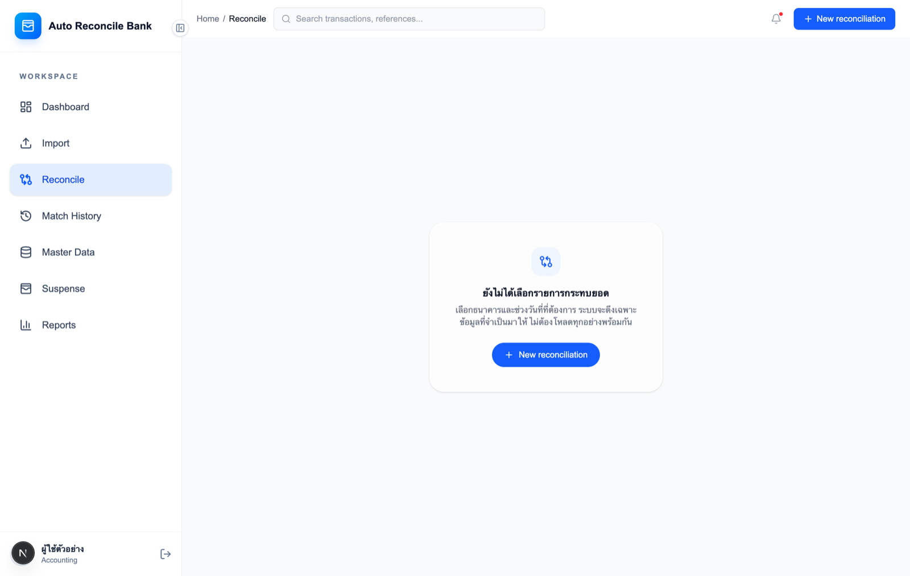
| สิ่งที่กด | กดแล้วเกิดอะไรขึ้น |
|---|---|
| ปุ่ม New reconciliation (ตรงกลาง หรือมุมขวาบน) | เปิดกล่องตั้งค่าขอบเขตงาน (สเต็ปที่ 2) |
| ช่อง Search transactions… | ช่องค้นหาบนแถบด้านบน (ยังไม่เปิดใช้งานในเวอร์ชันนี้) |
| ไอคอนกระดิ่ง 🔔 | พื้นที่แจ้งเตือน (ยังไม่เปิดใช้งาน) |
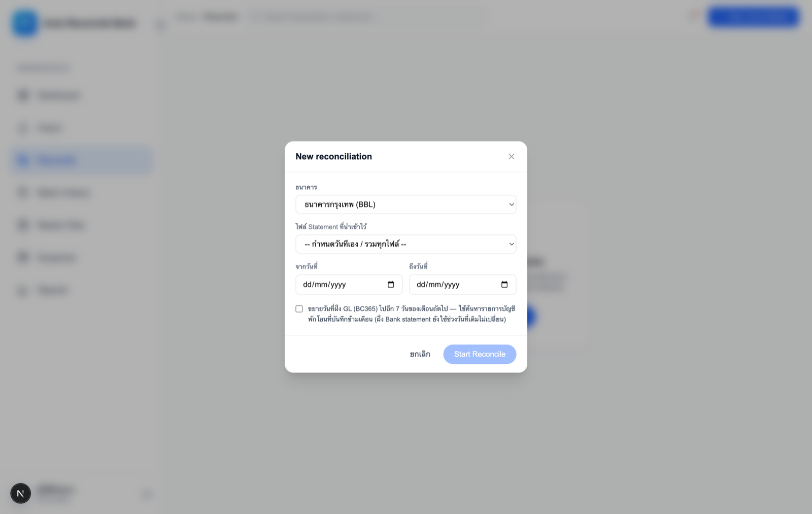
| ช่อง / ปุ่ม | ผลของการเลือก |
|---|---|
| ธนาคาร | ล็อกว่างานรอบนี้ทำของธนาคารไหน ตารางฝั่งซ้ายจะดึงเฉพาะ Statement ของธนาคารนั้น |
| ไฟล์ Statement ที่นำเข้าไว้ | เลือกไฟล์ที่เคยนำเข้า → ระบบจะ เติมช่วงวันที่ให้อัตโนมัติ ตามช่วงของไฟล์นั้น เลือก “-- กำหนดวันที่เอง / รวมทุกไฟล์ --” ถ้าอยากระบุช่วงวันที่เอง |
| จากวันที่ / ถึงวันที่ | กำหนดขอบเขตวันที่เอง — แก้ช่องนี้เมื่อไร ช่องเลือกไฟล์จะเด้งกลับเป็น “กำหนดวันที่เอง” ทันที |
| ☑ ขยายวันที่ฝั่ง GL (BC365) ไปอีก 7 วัน | ค้นรายการฝั่ง GL เผื่อไปอีก 7 วันของเดือนถัดไป เฉพาะฝั่ง GL เท่านั้น ฝั่ง Bank ยังใช้ช่วงเดิม ใช้ตามหารายการบัญชีพักโอนที่บันทึกข้ามเดือน — เมื่อเปิดไว้จะมีป้ายเหลือง “GL +7 วัน” โชว์บนแถบสรุป |
| ปุ่ม ยกเลิก / ✕ / กดพื้นที่มืดรอบกล่อง | ปิดกล่องโดยไม่เปลี่ยนอะไร |
| ปุ่ม Start Reconcile | เริ่มงาน — กดได้เมื่อเลือกครบทั้งธนาคารและวันที่ทั้ง 2 ช่อง |
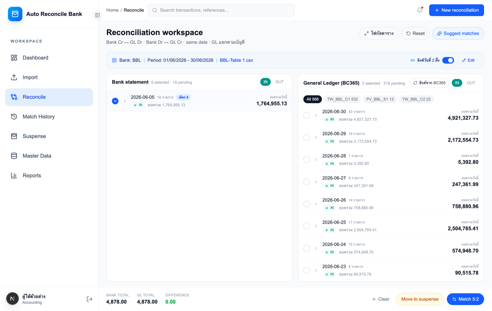
| ปุ่ม | กดแล้วเกิดอะไรขึ้น |
|---|---|
| โฟกัสตาราง | ซ่อนแถบข้อมูลด้านบนและย่อแถบสรุปด้านล่าง เพื่อให้เห็นตาราง 2 ฝั่งใหญ่ขึ้น กดซ้ำ (ปุ่มจะเปลี่ยนเป็น “ย่อกลับ”) เพื่อกลับมุมมองเดิม |
| Reset | โหลดข้อมูลทั้ง 2 ฝั่งใหม่จากฐานข้อมูล และล้างรายการที่ติ๊กเลือกไว้ |
| Suggest matches ✨ | ให้ระบบหาคู่ที่ชัดเจน (1:1, 1:N, N:1) ให้อัตโนมัติ แล้วเปิดหน้าตรวจก่อนบันทึก — ดูข้อ 6.4 |
| สิ่งที่เห็น / กด | ความหมาย |
|---|---|
| Bank / Period / ชื่อไฟล์ | ย้ำว่ากำลังทำงานกับธนาคารและช่วงวันที่ไหนอยู่ |
| สวิตช์ ลิงค์วันที่ 2 ฝั่ง | เปิด = คลี่ดูวันไหนฝั่งหนึ่ง อีกฝั่งจะคลี่วันเดียวกันและเลื่อนตามให้อัตโนมัติ (สะดวกตอนเทียบ) ปิด = ทั้ง 2 ฝั่งคลี่/เลื่อนอิสระต่อกัน |
| ปุ่ม Edit ✎ | เปิดกล่องตั้งค่าเดิมกลับมาแก้ไขช่วงวันที่/ธนาคาร โดยเติมค่าปัจจุบันไว้ให้แล้ว |
| สิ่งที่กด | กดแล้วเกิดอะไรขึ้น |
|---|---|
| ปุ่ม IN / OUT | สลับดูเฉพาะเงินเข้า หรือเฉพาะเงินออก — กดฝั่งไหนก็เปลี่ยนพร้อมกันทั้ง 2 ฝั่ง เพื่อให้เทียบกันได้เสมอ |
| แท็บ All / เลขบัญชี (ฝั่ง GL) | กรองรายการ GL ให้เหลือเฉพาะบัญชีที่เลือก ตัวเลขบนแท็บคือจำนวนรายการ |
| ปุ่ม ซิงค์จาก BC365 (มุมขวาบนฝั่ง GL) | ดึงรายการ GL ล่าสุด 40 วัน จาก Business Central มาอัปเดต แล้วโหลดหน้าใหม่ให้ ใช้หลังจากบัญชีเพิ่งไปแก้ข้อมูลใน BC365 เสร็จ |
| คลิกที่แถววันที่ | คลี่/พับดูรายการย่อยของวันนั้น |
| วงกลมติ๊กหน้าแถววันที่ | เลือก/ยกเลิกทั้งวันในครั้งเดียว ถ้าเลือกไว้บางส่วนจะแสดงเป็นขีดกลาง |
| วงกลมติ๊กหน้ารายการย่อย | เลือก/ยกเลิกทีละรายการ |
| วงกลมติ๊กสีเขียว | วันนั้นยอดรวมของ 2 ฝั่ง เท่ากันพอดี ระบบติ๊กให้ล่วงหน้าแล้ว ตรวจแล้วกด Match ได้เลย |
| วงกลมติ๊กสีน้ำเงิน | เป็นรายการที่เลือกเอง ยอดยังไม่ยืนยันว่าตรง |
| ป้ายสี “กลุ่ม 1 / 2 / 3…” | ระบบชี้ว่ารายการไหนกับรายการไหนของอีกฝั่งจับกลุ่มกันได้ — สีเดียวกัน = คู่กัน ทั้ง 2 ฝั่ง |
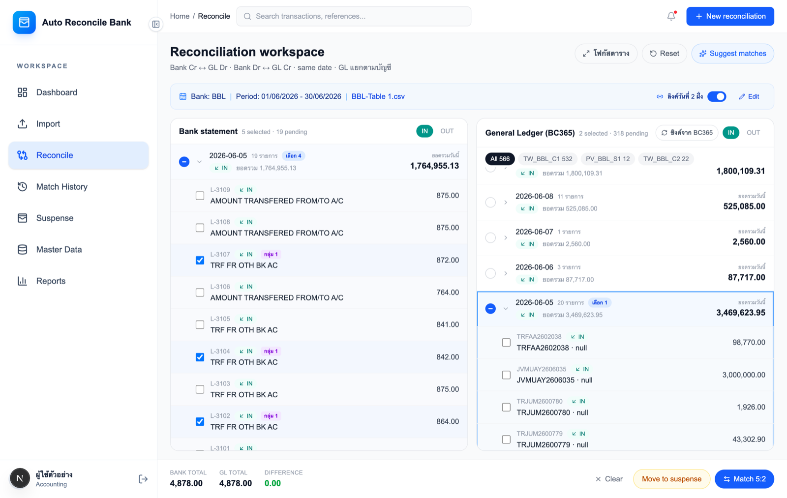
| สิ่งที่เห็น / กด | ความหมาย |
|---|---|
| BANK TOTAL / GL TOTAL | ยอดรวมของรายการที่ติ๊กเลือกไว้แต่ละฝั่ง |
| DIFFERENCE | ผลต่างของ 2 ฝั่ง — สีเขียวเมื่อเป็น 0.00 และ สีแดงเมื่อไม่ตรง |
| ปุ่ม Clear | ยกเลิกรายการที่ติ๊กเลือกไว้ทั้งหมด (ไม่กระทบข้อมูลในฐานข้อมูล) |
| ปุ่ม Move to suspense | ย้ายรายการ ฝั่ง GL ที่เลือกไว้ เข้าบัญชีพักโอน กดได้เมื่อเลือกฝั่ง GL อย่างน้อย 1 รายการ รายการจะหายจากหน้านี้ไปโผล่ที่หน้า Suspense |
| ปุ่ม Match n:m | บันทึกการจับคู่ ตัวเลขบนปุ่มบอกว่ากำลังจับ Bank กี่รายการต่อ GL กี่รายการ กดได้เมื่อ: เลือกทั้ง 2 ฝั่ง และ DIFFERENCE = 0.00 เท่านั้น บันทึกแล้วรายการจะหายไปจากหน้านี้และขึ้นแถบเขียว “จับคู่สำเร็จ” พร้อมเลข MatchId |
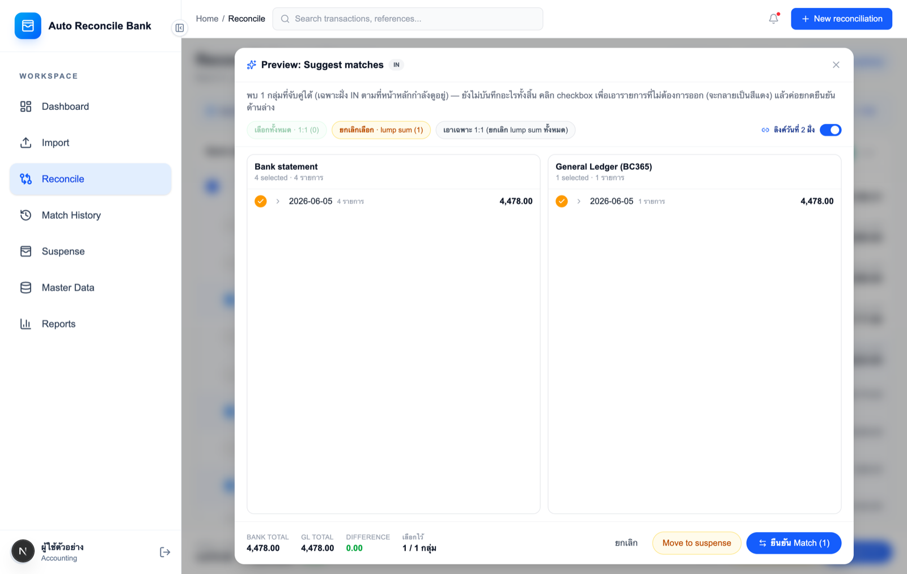
| สิ่งที่กด | กดแล้วเกิดอะไรขึ้น |
|---|---|
| วงกลมติ๊กหน้ารายการ | ทุกกลุ่มเริ่มต้นถูกติ๊กไว้แล้ว — กดเพื่อ “เอาออก” กลุ่มที่ไม่ต้องการ วงกลมจะกลายเป็น ✕ สีแดง แปลว่ากลุ่มนั้นจะไม่ถูกบันทึก |
| สีวงกลม เขียว | กลุ่มแบบ 1:1 — ตรงตัว มั่นใจได้สูง |
| สีวงกลม เหลือง | กลุ่มแบบ lump sum (1:N หรือ N:1) — ควรตรวจก่อนยืนยัน |
| ปุ่ม เลือกทั้งหมด · 1:1 (n) | ติ๊ก/ยกเลิกกลุ่ม 1:1 ทั้งหมดในครั้งเดียว |
| ปุ่ม เลือกทั้งหมด · lump sum (n) | ติ๊ก/ยกเลิกกลุ่ม lump sum ทั้งหมดในครั้งเดียว |
| ปุ่ม เอาเฉพาะ 1:1 (ยกเลิก lump sum ทั้งหมด) | ทางลัดสำหรับคนที่ต้องการบันทึกเฉพาะคู่ที่ชัดเจนที่สุด |
| สวิตช์ ลิงค์วันที่ 2 ฝั่ง | เหมือนหน้าหลัก — คลี่ฝั่งหนึ่งแล้วอีกฝั่งคลี่ตาม |
| ปุ่ม ยกเลิก / ✕ | ปิดหน้าต่างโดยไม่บันทึกอะไรเลย |
| ปุ่ม Move to suspense | ส่งกลุ่มที่ยังติ๊กอยู่เข้าบัญชีพักโอนแทนการจับคู่ |
| ปุ่ม ยืนยัน Match (n) | บันทึกการจับคู่ทุกกลุ่มที่ยังติ๊กอยู่ — กดได้เมื่อ DIFFERENCE = 0.00 |
ย้อนดูได้ว่า Match แต่ละครั้งจับรายการไหนกับรายการไหน ใครทำ เมื่อไร และยกเลิกได้ถ้าจับผิด
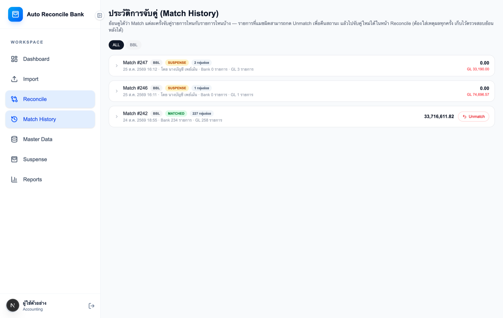
| สิ่งที่เห็น / กด | ความหมาย |
|---|---|
| ปุ่ม ALL / ชื่อธนาคาร | กรองให้เหลือเฉพาะธนาคารที่เลือก |
| Match #nnn | เลขอ้างอิงของการจับคู่ครั้งนั้น ใช้อ้างอิงข้ามหน้าและในรายงานได้ |
| ป้าย MATCHED | จับคู่สำเร็จ |
| ป้าย SUSPENSE | เป็นรายการที่พักไว้ ไม่ใช่การจับคู่ |
| ป้าย ยกเลิกแล้ว | เคยจับคู่แล้วถูก Unmatch ไป การ์ดจะจางลง และแสดงว่าใครยกเลิก เมื่อไร ด้วยเหตุผลอะไร |
| ป้าย “n กลุ่มย่อย” | ภายใน Match นี้แตกเป็นกี่คู่ย่อย |
| บรรทัดวันเวลา · โดย … | เวลาที่บันทึกและชื่อผู้ทำรายการ |
| ยอดเงินมุมขวา | ยอดรวมฝั่ง Bank — ถ้ายอด GL ไม่ตรงจะมีบรรทัดสีแดงบอกยอด GL กำกับ |
| คลิกที่การ์ด (หรือลูกศร ›) | คลี่ดูรายละเอียดทุกกลุ่มย่อย |
| ปุ่ม Unmatch (สีแดง) | เปิดกล่องยืนยันยกเลิกการจับคู่ — มีเฉพาะการ์ดที่เป็น MATCHED และยังไม่ถูกยกเลิก |
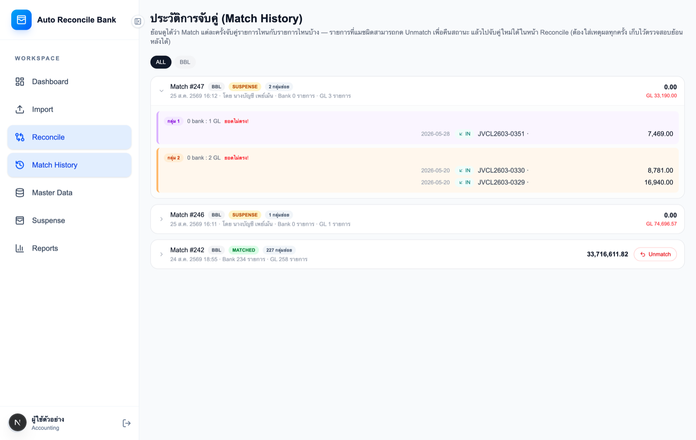
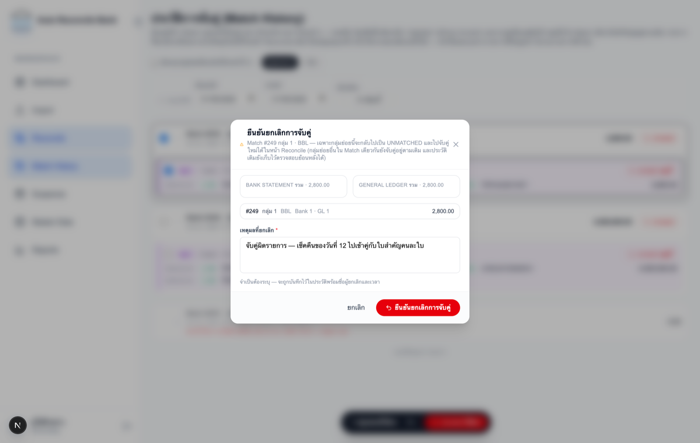
| สิ่งที่กด | กดแล้วเกิดอะไรขึ้น |
|---|---|
| กล่อง Bank statement / General Ledger | แสดงทุกบรรทัดที่จะถูกคืนสถานะ พร้อมยอดรวมของแต่ละฝั่ง — ใช้ตรวจก่อนกดจริง |
| ช่อง เหตุผลที่ยกเลิก * | จำเป็นต้องกรอก ถ้าเว้นว่างปุ่มยืนยันจะกดไม่ได้ ข้อความนี้จะถูกเก็บไว้ในประวัติพร้อมชื่อผู้ยกเลิกและเวลา |
| ปุ่ม ยกเลิก / ✕ / กดพื้นที่มืดรอบกล่อง | ปิดกล่องโดยไม่ทำอะไร |
| ปุ่ม ยืนยันยกเลิกการจับคู่ (สีแดง) | คืนสถานะทุกรายการใน Match นี้กลับเป็น UNMATCHED
รายการจะกลับไปโผล่ที่หน้า Reconcile ให้จับคู่ใหม่ได้ ประวัติเดิมไม่ถูกลบ — การ์ดเดิมจะยังอยู่ในหน้านี้แต่ติดป้าย “ยกเลิกแล้ว” |
รวมรายการที่กด “Move to suspense” ไว้จากหน้า Reconcile และดึงกลับมาจับคู่ใหม่ได้ทุกเมื่อ
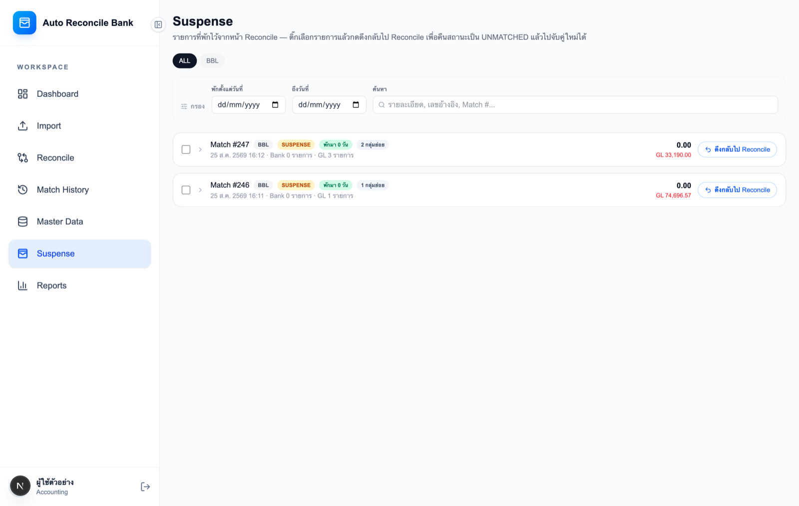
| สิ่งที่กด | กดแล้วเกิดอะไรขึ้น |
|---|---|
| ปุ่ม ALL / ชื่อธนาคาร | กรองเฉพาะธนาคารที่เลือก |
| พักตั้งแต่วันที่ / ถึงวันที่ | กรองตามวันที่ที่กดพักไว้ |
| ช่องค้นหา | ค้นจากรายละเอียดรายการ เลขอ้างอิง หรือเลข Match # |
| ปุ่ม ล้างตัวกรอง | โผล่มาเมื่อมีตัวกรองทำงานอยู่ — กดแล้วล้างวันที่และคำค้นทั้งหมด |
| ป้าย พักมา n วัน | อายุของรายการที่พักไว้ ยิ่งนานยิ่งควรรีบเคลียร์ |
| ช่องติ๊กหน้าการ์ด | เลือกทุกบรรทัดใน Match นั้นพร้อมกัน |
| คลิกที่การ์ด | คลี่ดูรายการย่อย และติ๊กเลือกทีละบรรทัดได้ |
| ปุ่ม ดึงกลับไป Reconcile (บนการ์ด) | เปิดกล่องยืนยันสำหรับ ทั้ง Match นั้น ทันที |
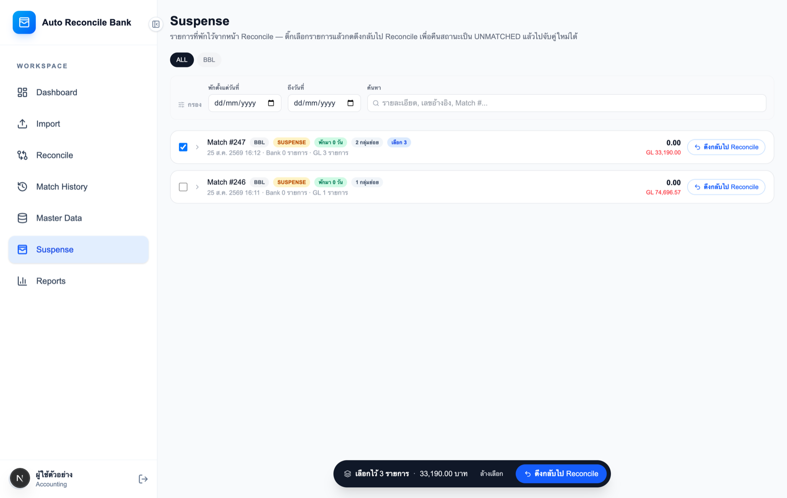
| ปุ่มบนแถบดำ | กดแล้วเกิดอะไรขึ้น |
|---|---|
| เลือกไว้ n รายการ · ยอดรวม | สรุปจำนวนบรรทัดและยอดเงินที่กำลังเลือกอยู่ |
| ล้างเลือก | ยกเลิกการติ๊กทั้งหมด แถบดำจะหายไป |
| ดึงกลับไป Reconcile | เปิดกล่องยืนยันสำหรับเฉพาะบรรทัดที่ติ๊กไว้ (ข้ามหลาย Match ได้) |
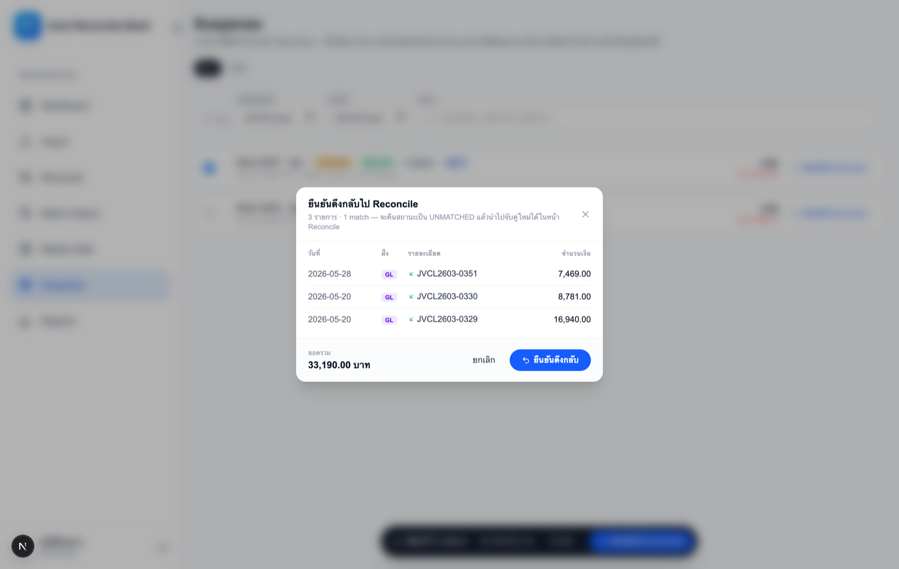
| ปุ่ม | กดแล้วเกิดอะไรขึ้น |
|---|---|
| ตารางในกล่อง | วันที่ · ฝั่ง (BANK/GL) · รายละเอียด · จำนวนเงิน ของทุกบรรทัดที่จะถูกดึงกลับ |
| ยกเลิก / ✕ | ปิดกล่อง ไม่มีอะไรเปลี่ยน |
| ยืนยันดึงกลับ | คืนสถานะบรรทัดเหล่านั้นเป็น UNMATCHED รายการจะหายจากหน้า Suspense และกลับไปโผล่ที่หน้า Reconcile ให้จับคู่ใหม่ |
ใช้ดูข้อมูลที่นำเข้าไปแล้วรายบรรทัด แก้ไขข้อมูลที่ผิด ลบไฟล์ที่นำเข้าซ้ำ หรือเพิ่มรายการที่ตกหล่นด้วยมือ
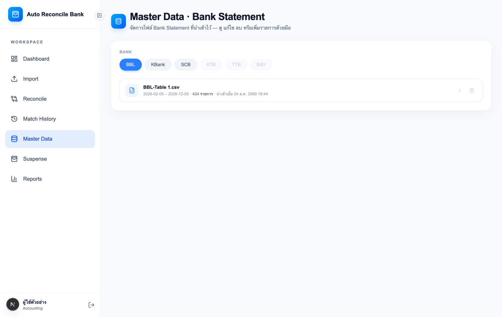
| สิ่งที่กด | กดแล้วเกิดอะไรขึ้น |
|---|---|
| ปุ่มชื่อธนาคาร | สลับดูไฟล์ของธนาคารนั้น (เปลี่ยนธนาคารแล้วระบบจะกลับมาหน้ารายการไฟล์เสมอ) |
| คลิกที่ชื่อไฟล์ | เปิดดูรายการทุกบรรทัดในไฟล์นั้น |
| ไอคอนถังขยะ 🗑 | ลบไฟล์นั้น ทั้งชุด — ระบบจะถามยืนยันก่อน 1 ครั้ง |
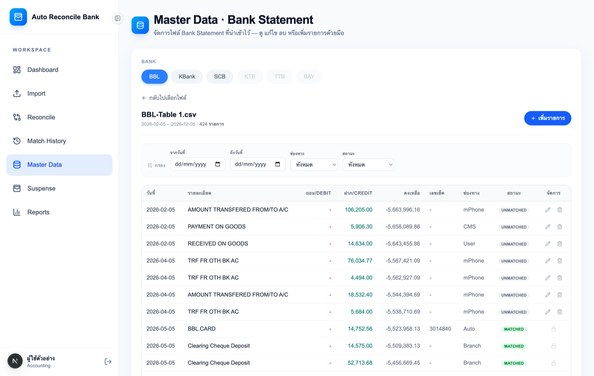
| สิ่งที่กด | กดแล้วเกิดอะไรขึ้น |
|---|---|
| ← กลับไปเลือกไฟล์ | กลับไปหน้ารายการไฟล์ |
| ปุ่ม + เพิ่มรายการ | เปิดแถวว่างให้กรอกรายการใหม่ด้วยมือ (วันที่ · รายละเอียด · Debit · Credit · Balance) แล้วกด ✓ เพื่อบันทึก หรือ ✕ เพื่อทิ้ง |
| ตัวกรอง จากวันที่ / ถึงวันที่ | กรองตามวันที่ของรายการ |
| ตัวกรอง ช่องทาง | กรองตามช่องทางที่เกิดรายการ เช่น mPhone, CMS, Branch, Auto |
| ตัวกรอง สถานะ | เลือกดูเฉพาะ UNMATCHED / MATCHED / SUSPENSE |
| ปุ่ม ล้างตัวกรอง | ล้างตัวกรองทั้งหมด กลับมาแสดงทุกแถว |
| ไอคอนดินสอ ✎ ท้ายแถว | แก้ไขแถวนั้นในตารางเลย แล้วกด ✓ บันทึก หรือ ✕ ยกเลิก |
| ไอคอนถังขยะ 🗑 ท้ายแถว | ลบแถวนั้น |
| ไอคอนแม่กุญแจ 🔒 ท้ายแถว | แถวนี้ ถูกจับคู่ไปแล้ว จึงแก้ไข/ลบไม่ได้ ถ้าจำเป็นต้องแก้ ให้ไป Unmatch ที่หน้า Match History ก่อน |
| ปุ่มเลื่อนหน้า ‹ › ด้านล่าง | เปลี่ยนหน้าของตาราง |
แสดงผลแบบเทียบ 2 ฝั่งคู่กัน 1 แถวคือ 1 คู่ Bank–GL ในกลุ่มย่อยเดียวกัน พร้อมส่งออกเป็นไฟล์ Excel
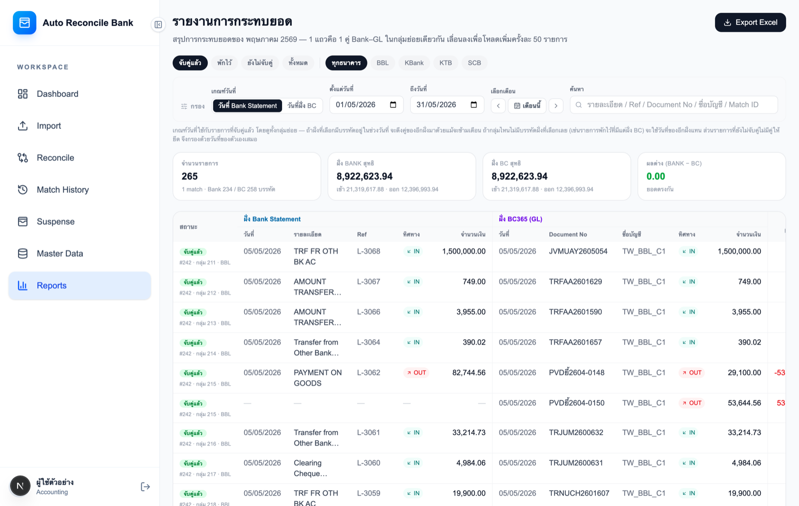
| สิ่งที่กด | กดแล้วเกิดอะไรขึ้น |
|---|---|
| จับคู่แล้ว / พักไว้ / ยังไม่จับคู่ / ทั้งหมด | เลือกสถานะที่จะแสดง (ค่าเริ่มต้นคือ “จับคู่แล้ว”) |
| ทุกธนาคาร / BBL / KBank / … | กรองตามธนาคาร |
| วันที่ Bank Statement / วันที่ฝั่ง BC | เลือกว่าจะใช้วันที่ของฝั่งไหนเป็นเกณฑ์คัดรายการเข้าช่วงเวลา |
| ตั้งแต่วันที่ / ถึงวันที่ | กำหนดช่วงเวลาของรายงาน |
| ปุ่ม ‹ · เดือนนี้ · › | เลื่อนช่วงวันที่ไปทีละเดือน หรือกระโดดกลับมาเดือนปัจจุบัน |
| ช่องค้นหา | ค้นจากรายละเอียด / Ref / Document No / ชื่อบัญชี / Match ID (พิมพ์แล้วรอประมาณ 1 วินาทีระบบจะค้นให้เอง) |
| ปุ่ม ล้างตัวกรอง | กลับไปค่าเริ่มต้น (จับคู่แล้ว · ทุกธนาคาร · ไม่มีคำค้น) |
| สิ่งที่เห็น / กด | ความหมาย |
|---|---|
| การ์ด จำนวนรายการ | จำนวนแถวทั้งหมดตามตัวกรอง พร้อมบอกว่ามาจากกี่ match และกี่บรรทัดของแต่ละฝั่ง |
| การ์ด ฝั่ง BANK / ฝั่ง BC สุทธิ | ยอดสุทธิของแต่ละฝั่ง พร้อมแยกเงินเข้า–เงินออก |
| การ์ด ผลต่าง (BANK − BC) | เขียว = ยอดตรงกัน · แดง = ยังไม่ตรง |
| คอลัมน์ ผลต่าง (ขวาสุดของตาราง) | ผลต่างรายแถว ถ้าเป็น 0 จะแสดงเป็นสีเทาจาง ถ้าไม่เป็น 0 จะเป็นสีแดง |
| ช่องขีด — ในตาราง | แถวนั้นมีข้อมูลฝั่งเดียว (อีกฝั่งไม่มีคู่) |
| เลื่อนหน้าจอลงจนสุดตาราง | ระบบโหลดเพิ่มให้เองครั้งละ 50 รายการ (ถ้าไม่โหลดเอง กดคำว่า โหลดเพิ่ม ได้) |
| ปุ่ม Export Excel | สร้างและดาวน์โหลดไฟล์ .xlsx ของรายงาน ตามตัวกรองที่ตั้งไว้ตอนนั้น (ไม่ใช่แค่แถวที่โหลดมาแล้วบนจอ)
ระหว่างสร้างไฟล์ปุ่มจะหมุนและกดซ้ำไม่ได้ |
| สี / ป้าย | ความหมาย |
|---|---|
| IN · ตัวเลขเขียว · ลูกศรชี้เข้า ↙ | เงินเข้าบัญชี (ฝั่งธนาคารเป็น Credit) |
| OUT · ตัวเลขแดง · ลูกศรชี้ออก ↗ | เงินออกจากบัญชี (ฝั่งธนาคารเป็น Debit) |
| วงกลมติ๊กเขียว | ยอด 2 ฝั่งของวันนั้นตรงกันพอดี — พร้อมกด Match |
| วงกลมติ๊กน้ำเงิน | ผู้ใช้เลือกเอง ยังไม่ยืนยันว่ายอดตรง |
| วงกลมแดงมีกากบาท (ในหน้า Suggest) | กลุ่มนี้ถูกเอาออกแล้ว จะไม่ถูกบันทึก |
| ป้ายสี “กลุ่ม n” | รายการที่จับกลุ่มกันได้ — สีเดียวกันทั้ง 2 ฝั่งคือคู่กัน |
| DIFFERENCE เขียว / แดง | เขียว = 0.00 กด Match ได้ · แดง = ยังไม่ตรง กดไม่ได้ |
| 🔒 แม่กุญแจ | รายการถูกจับคู่แล้ว แก้ไข/ลบไม่ได้ |
| คำถาม | คำตอบ |
|---|---|
| ปุ่ม Match กดไม่ได้ (สีจาง) | เกิดจากอย่างใดอย่างหนึ่ง: ยังไม่ได้เลือกฝั่งใดฝั่งหนึ่ง หรือ DIFFERENCE ยังไม่เป็น 0.00 — ดูตัวเลข DIFFERENCE ที่แถบล่าง |
| ปุ่ม Move to suspense กดไม่ได้ | ต้องเลือกรายการฝั่ง GL อย่างน้อย 1 รายการ (ฝั่ง Bank อย่างเดียวพักไม่ได้) |
| รายการฝั่ง GL ไม่ครบ / เพิ่งแก้ใน BC365 | กดปุ่ม “ซิงค์จาก BC365” มุมขวาบนของตารางฝั่ง GL (ดึง 40 วันล่าสุด) ถ้าต้องการย้อนหลังมากกว่านั้นใช้ “ซิงค์ GL ทั้งหมด” ที่หน้า Import |
| รายการพักโอนบันทึกข้ามเดือน หาไม่เจอ | ตอนกด New reconciliation ให้ติ๊ก “ขยายวันที่ฝั่ง GL ไปอีก 7 วัน” |
| อัปโหลดไฟล์แล้วปุ่ม Import กดไม่ได้ | ระบบพบว่าไฟล์ชื่อนี้เคยนำเข้าแล้ว — ไปลบชุดเดิมที่หน้า Master Data ก่อน แล้วนำเข้าใหม่ |
| แก้ไขบรรทัดใน Master Data ไม่ได้ (ขึ้นแม่กุญแจ) | บรรทัดนั้นถูกจับคู่แล้ว ต้อง Unmatch ที่หน้า Match History ก่อน |
| Suggest matches ไม่เจออะไรเลย | ในทิศทาง (IN/OUT) และช่วงวันที่ที่ดูอยู่ ไม่มีคู่ที่ชัดเจนพอ — ลองสลับ IN ↔ OUT หรือจับคู่เองด้วยมือ |
| รายงานว่าง ไม่มีข้อมูล | ตรวจช่วงวันที่ สถานะที่เลือก (ค่าเริ่มต้นคือ “จับคู่แล้ว”) และเกณฑ์วันที่ Bank/BC |
| ตารางกว้างไม่พอ อ่านยาก | กดปุ่ม “โฟกัสตาราง” ที่หน้า Reconcile และ/หรือพับแถบเมนูด้านซ้าย |